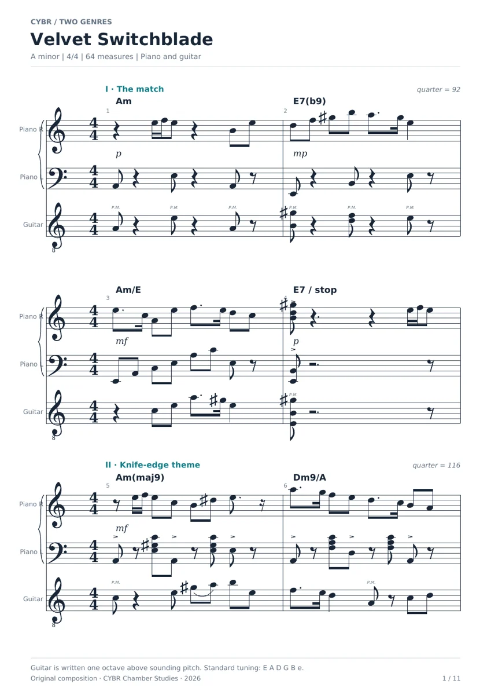
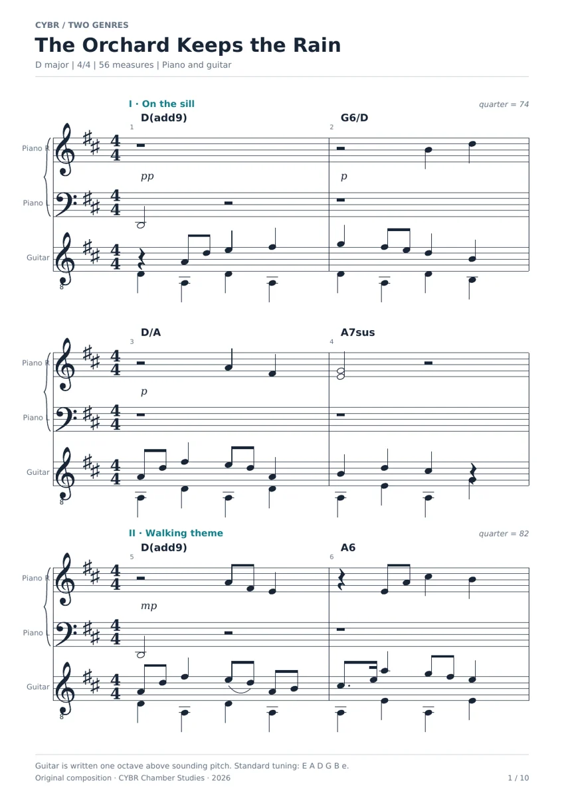
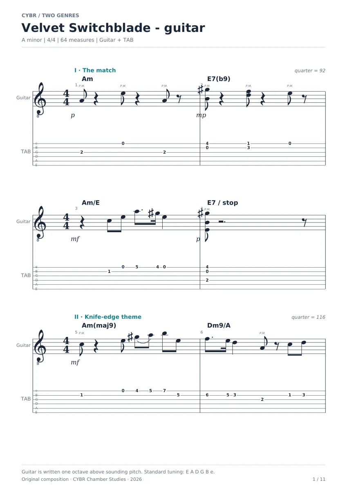

Listen to Lantern Steps
A new four-bar miniature rendered through the recovered Lacuna instruments and calibrated mix. The committed lossless performance is playable below; score and performance data retain its note schedule.
Independent work in
geometry, motion,
light & sound.
Score / Velvet Switchblade

View render ↗Four bars. Piano & clean electric guitar.
Download lossless recording ↗Music with a readable structure: original scores, calibrated sample instruments and performances that can be traced back to each note.

View render ↗
View render ↗A new four-bar miniature rendered through the recovered Lacuna instruments and calibrated mix. The committed lossless performance is playable below; score and performance data retain its note schedule.
Velvet Switchblade and The Orchard Keeps the Rain are preserved as printable scores and guitar tablature. Their full original audio and score videos are not in this checkout, so this page presents the retained notation alongside the available miniature.
The engine uses Slender Salamander piano and BJAM clean-electric recordings. A repaired velocity crossfade restores the faded contribution to quiet guitar notes, while fixed instrument gains preserve the calibrated relationship between parts.
PROJECT RECORDS
Values below come from the retained project reports. The original runs have not been rerun for this portfolio; open each artifact to inspect its scope.
Artifact preview · Open complete JSON ↗
{
"master_constant_gain_db": 7.374376881136573,
"lufs": -19.20999976261289,
"true_peak_dbfs": -4.416037445553975,
"sample_peak_dbfs": -4.4163713455200195,
"finite": true,
"clipped_samples": 0,
"duration": 17.63479166666667,
"note_attacks": 33,
"title": "Lantern Steps"
}Artifact preview · Open complete JSON ↗
{
"title": "Lantern Steps",
"slug": "lantern-steps",
"mix_profile": "tango",
"preset_guitar": "electric",
"bar_starts": [
0.7,
3.308695652173913,
5.917391304347826,
8.52608695652174,
11.134782608695652
],
"tempi": [
92,
92,
92,
92
],
"meters": "4 entries \u2014 open full report",
"segments": "33 entries \u2014 open full report",
"pedal": "2 entries \u2014 open full report",
"duration": 17.63478260869565,
"sample_rate": 48000,
"lead_in": 0.7,
"tied_continuations": 0
}Artifact preview · Open complete JSON ↗
{
"Lacuna engine": {
"original_sha256": "5e6e0faef23a7903446d5624c7f4869f24e6b1aab52f27f4ce4cd1d577fcbd74",
"retained_sha256": "5e6e0faef23a7903446d5624c7f4869f24e6b1aab52f27f4ce4cd1d577fcbd74"
},
"Piano sampler": {
"original_sha256": "da3b8393db85cb522e5a0e87d105b02fc721ddf4f6d4e1177a5cf2cd8e98579e",
"retained_sha256": "da3b8393db85cb522e5a0e87d105b02fc721ddf4f6d4e1177a5cf2cd8e98579e"
},
"Composition": {
"original_sha256": "2519e1bbe7ea64315b92231a637a15f1cc2a0b30f8535682ba2d0cefef516169",
"retained_sha256": "2519e1bbe7ea64315b92231a637a15f1cc2a0b30f8535682ba2d0cefef516169"
}
}Artifact preview · Open complete JSON ↗
{
"Velvet_Switchblade": {
"unchanged_note_schedule": true,
"master_finite_unclipped": true,
"duration_s": 150.04089583333334,
"video_full_decode": "passed",
"video_probe": {
"programs": [],
"stream_groups": [],
"streams": "3 entries \u2014 open full report",
"format": {
"duration": "150.041000"
}
}
},
"The_Orchard_Keeps_the_Rain": {
"unchanged_note_schedule": true,
"master_finite_unclipped": true,
"duration_s": 179.0368125,
"video_full_decode": "passed",
"video_probe": {
"programs": [],
"stream_groups": [],
"streams": "3 entries \u2014 open full report",
"format": {
"duration": "179.037000"
}
}
},
"soft_attack_tests": "4 entries \u2014 open full report",
"scope": "Numerical, provenance, timing and decode checks. No claim of perceptual validation."
}SCORE → PERFORMANCE
The 33 events in Lantern Steps, plotted from the retained score. Horizontal length shows note duration; height shows MIDI pitch. Hover a note for instrument, pitch, timing and velocity.